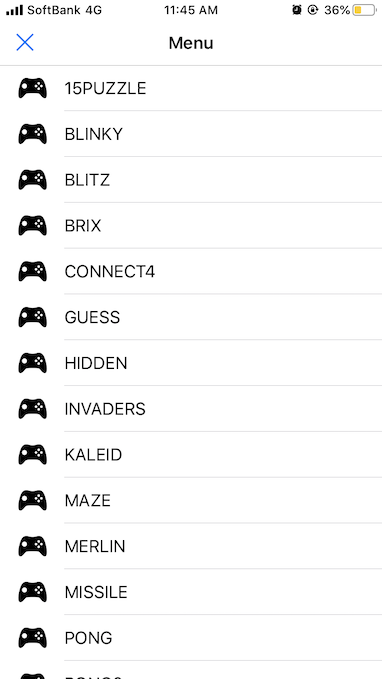
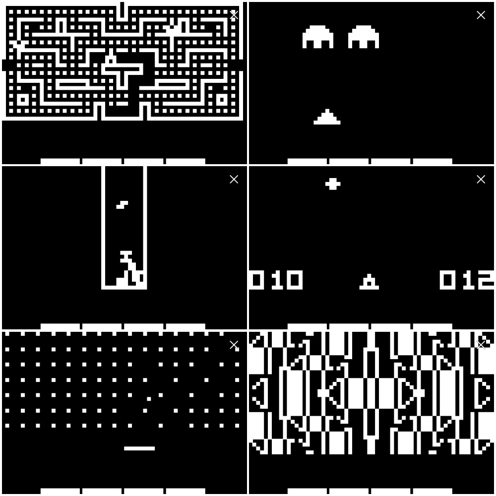
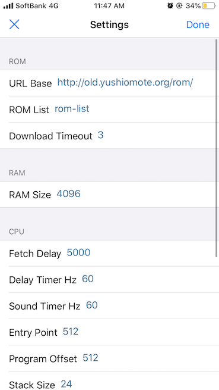
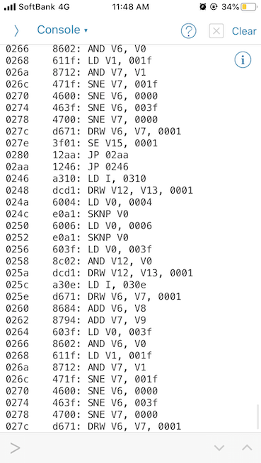
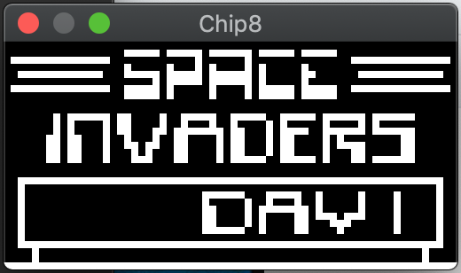
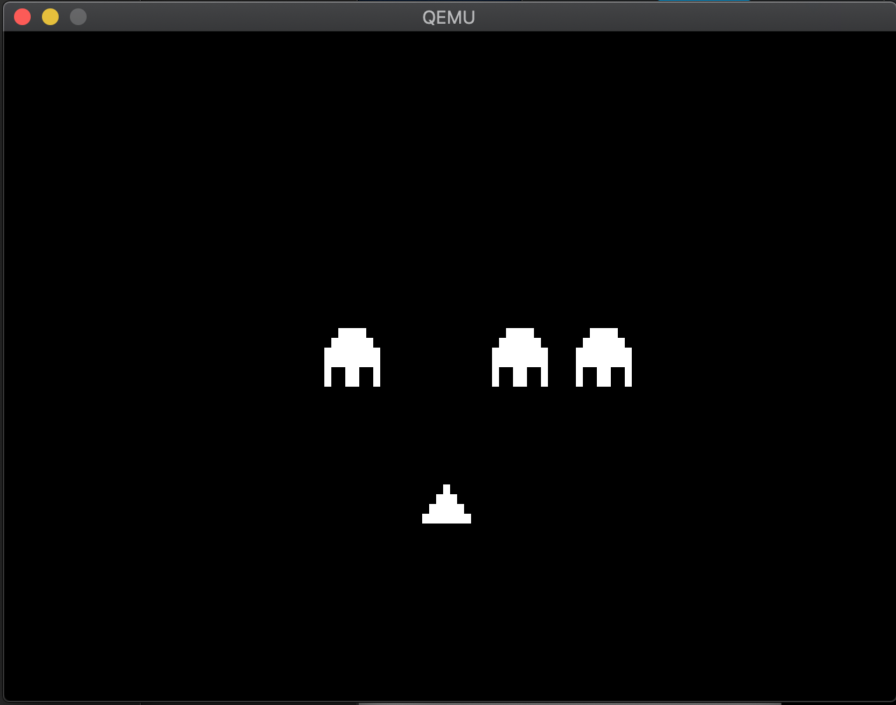
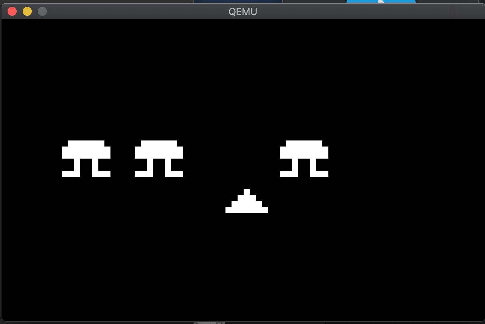

Chip-8 story
This is the article for the 6th day of qiita advent calendar.
Here I introduce how I played with Chip-8 these days.
What's Chip-8?
Chip-8 is an interpreted programming language, which was used on some old computer systems. Mostly video games were run on them.

Emulating Chip-8 execution environment is really easy; it basically needs only 36 instructions to be emulated. The memory is a simple byte array. Regarding I/O, it has only two timers, a keyboard, a sound and graphics, all of which are fairly simple. Because of the simplicity, Chip-8 is kind of a toy for emulation beginners these days.
In this post, I'll just introduce how I played with Chip-8, rather than how to write Chip-8 emulator. There're already many resources on the Internet about how to emulate. This document explains the specification well. If you want to emulate Chip-8, you can refer it.
Chip-8 in Pythonista on iOS
Pythonista 3 is a Python development environment which runs on iOS. By using it, you can write Python program on iPhone. When I first saw this app, I was a Python beginner. The app was so attractive to me because I could practice Python on commuter trains by writing/running code. My colleague was writing some games with Pythonista. So I also decided to write some games. But, after all, I was writing Chip-8 emulator.
The code is in the repository, iChip8.
So, this is the Chip-8 emulator written in Python, which runs on Pythonista 3, which runs on iOS.

When you launch the app, first, you are asked to choose a game ROM to play.

The game ROM files are not bundled in the app. They are hosted on web (Currently, it's on http://old.yushiomote.org/rom). When you choose one, it's downloaded.

The games are playable. You can enjoy them on the trains or buses on your iPhone. (But the problem is that Chip-8 key mappings are not intuitive and difficult to remember. :/)
Configuration
Running old technology in a new hardware sometimes is too fast. So, the emulator has configuration to insert some delays.

Stack size, entry point, RAM size and etc. are configurable too, though I think it's useless.
If you enable instruction trace, the executed instructions are printed in the console.

Chip-8 in Rust
I also wrote Chip-8 in Rust.

The Chip-8 emulator is published a library, libchip8. This library contains the environment-indepdendent part of emulation logic, expecting the users to define environment specific parts.
no_std
The Chip-8 emulator is no_std library. In Rust, no_std means that the library doesn't depend on any OS-specific functions. So, the library can be easily ported to various platforms including embedded systems, and even to bare-metal (no OS).
The interface
When you want to run libchip8 on your platform, you only need to implement this trait.
pub trait Hardware: Sized {
fn rand(&mut self) -> u8;
fn key(&mut self, key: u8) -> bool;
fn vram_set(&mut self, x: usize, y: usize, d: bool);
fn vram_get(&mut self, x: usize, y: usize) -> bool;
fn vram_setsize(&mut self, size: (usize, usize));
fn vram_size(&mut self) -> (usize, usize);
fn clock(&mut self) -> u64;
fn beep(&mut self);
fn sched(&mut self) -> bool { ... }
}
Once it's implemented, you have a Chip-8 emulator.
struct Hardware;
// 1. Implement `libchip8::Hardware`
impl libchip8::Hardware for Hardware {
// ...
}
// 2. Run `Chip8` giving a rom binary.
let chip8 = libchip8::Chip8::new(Hardware);
chip8.run(include_bytes!("roms/invaders.ch8"));
Chip-8 landed on bare-metal
libchip8 is no_std. So it can run on bare-metal (no OS).
UEFI (Macbook Pro)
By using libchip8, This project runs Chip-8 on Macbook Pro.


On Macbook, software is booted by the firmware called UEFI. So, the Chip-8 emulator needs to be UEFI bootable. There's already a nice library, uefi-rs. By using this library, we can easily write UEFI bootable apps.
So I simply combined uefi-rs and libchip8. Cross-compiling to create uefi binary is so easy. You can use cargo-xbuild. Simply you can build as follows.
cargo xbuild --target x86_64-unknown-uefi
BIOS
I tried libchip8 on BIOS this afternoon, and saw it worked on QEMU. This is the project, chip8pc.

Well… Sorry the picture looks the same as the one on UEFI (Both are on QEMU with black and white graphics).
There're already some helpful crates to write BIOS bootable apps in Rust.
- bootloader: Bootloader written in Rust, which can boot Rust apps.
- x86_64: Library to use x86_64 hardware in Rust.
So I simply used libchip8 with them.
In both BIOS and UEFI case, I didn't spend much time thanks to existing libraries. How nice Rust ecosystem is! Even for the low level coding, we can easily rely on the great jobs done by other people, saving much time.
Summary
- Chip-8 everywhere.
- Rust ecosystem is awesome.